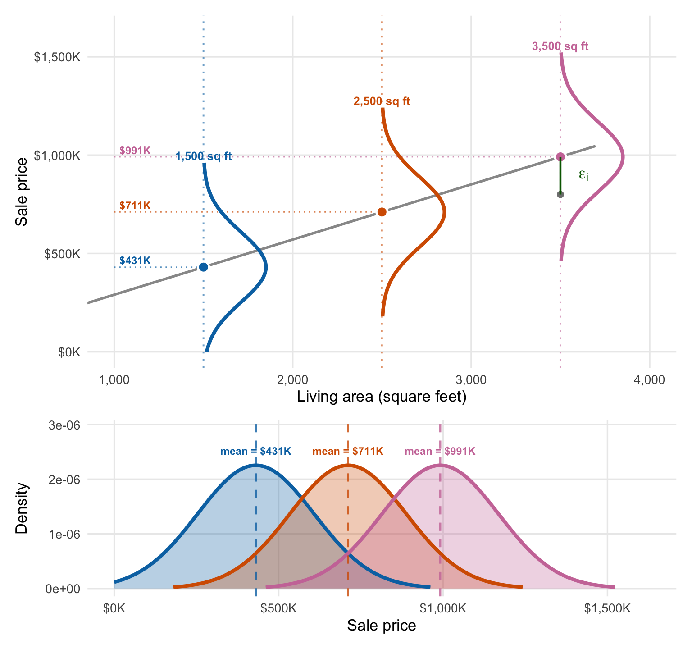
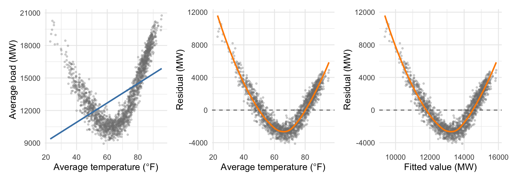
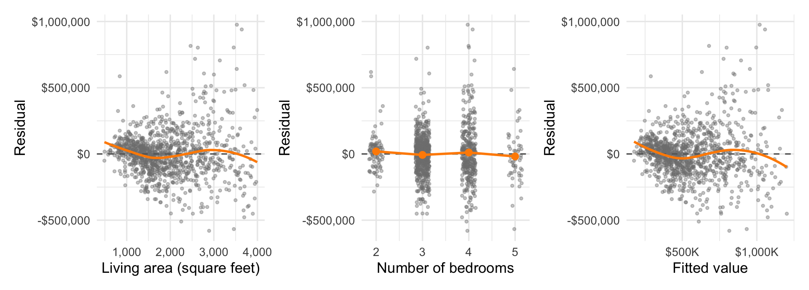
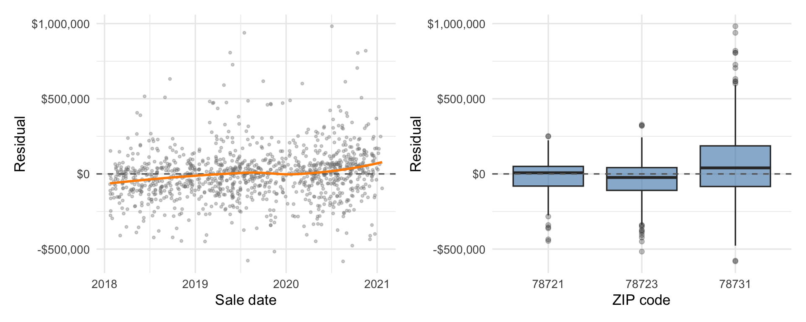
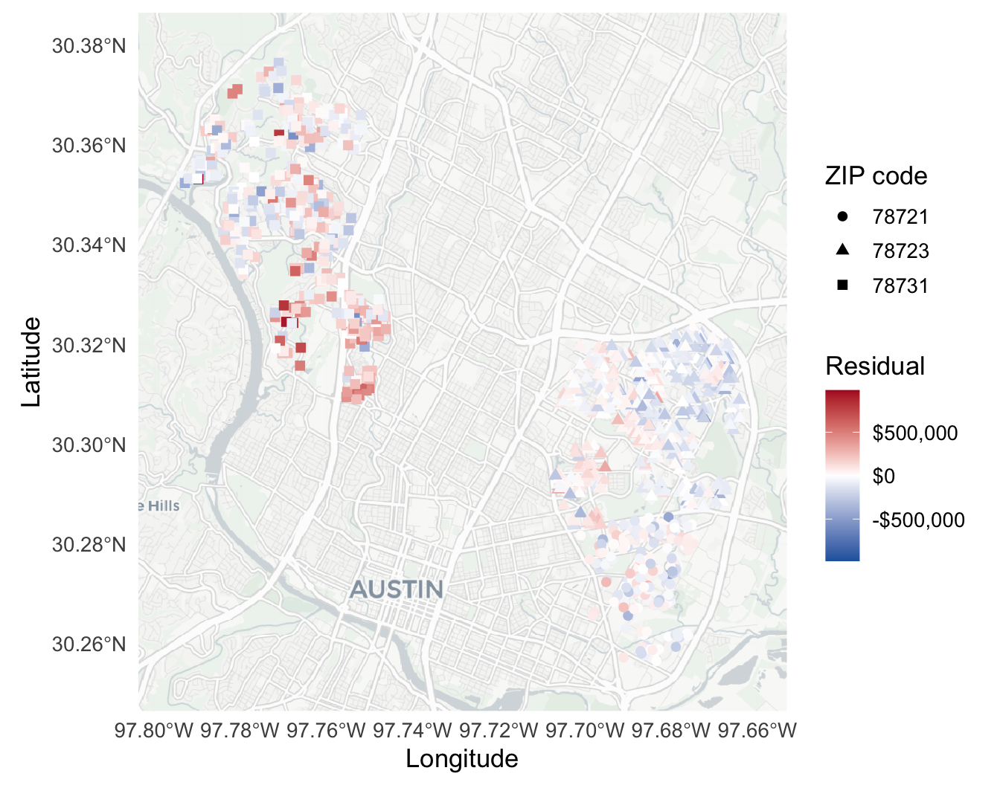
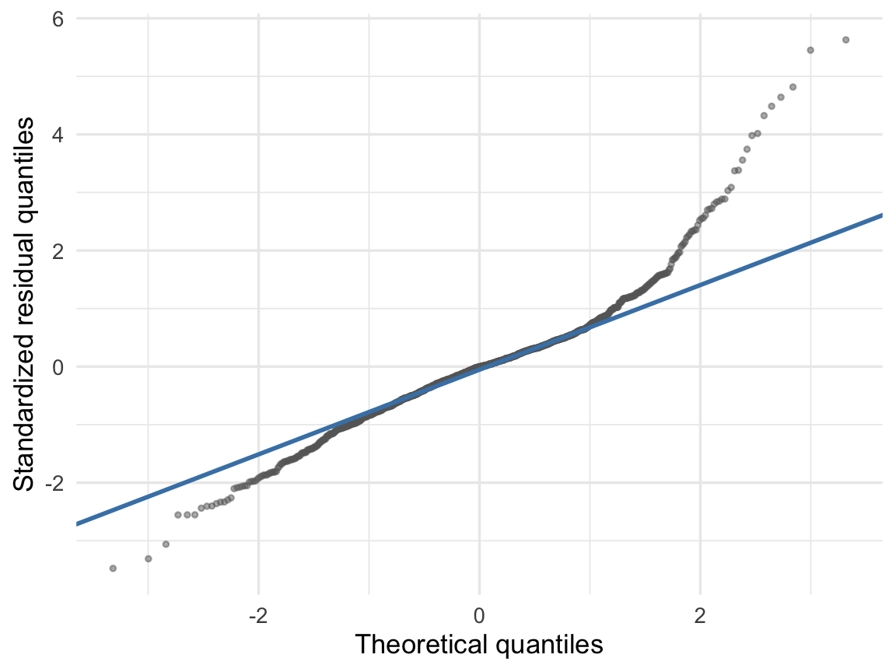

21 The Linear Regression Model
In the last two chapters we fit lines to Austin sale prices — price on living area, most recently — and measured the errors with residuals. Residuals describe errors we observed after fitting a line. To say how prediction errors for future houses are likely to behave, we need assumptions about the process that produced the data — we need a probability model. That model will also help us derive valid confidence intervals and hypothesis tests later on. The linear regression model uses four assumptions summarized by the acronym LINE. We describe each below, but first let’s see three of the four graphically (independence is about the relationship between different homes’ errors, so no single picture shows it):
The linear regression model says: The conditional distribution of sale price at any given area — the distribution of prices for all houses of that size which we might see — is normal, with a mean given by the population regression line and a standard deviation that does not depend on area. The deviations from the line for any two houses are independent; knowing one house sold for more than expected gives you no information about any other house.
We expand on each of the four assumptions below:
21.1 The LINE assumptions
21.1.1 Linearity
The linearity assumption says that the population relationship between \(X\) and \(Y\) follows
\[ Y = \beta_0 + \beta_1 X + \epsilon, \]
where \(\epsilon\) has zero expected value. We call \(\epsilon\) the true error — the population counterpart of the residual — and it includes the influence of all the factors we listed when we defined residuals (measurable factors like location and age as well as unmeasurable or random factors). In our example, \(\beta_0 + \beta_1 X\) is the true mean price at living area \(X\), and \(\epsilon\) is a home’s true error around that mean. The coefficients \(\beta_0\) and \(\beta_1\) describe the population relationship, rather than the fitted line from this sample.
21.1.2 Independence
The independence assumption says that the true errors do not carry information about one another. If one house sells above its predicted value on the population regression line, that tells us nothing about whether the next house will sell for more or less than expected.
21.1.3 Normality
The normality assumption says that true errors follow the normal distribution, centered at zero. Over-predictions and under-predictions are equally likely, most errors lie near zero, and errors become less common as their size grows according to our usual normal probability calculations.
21.1.4 Equal variance
The equal variance assumption says that true errors have the same standard deviation \(\sigma\) at every value of \(X\). For the housing model, small and large homes have the same typical error size. A widening band of prices as area increases would conflict with this assumption.
Together, the LINE assumptions give the full model
\[ Y_i = \beta_0 + \beta_1 X_i + \epsilon_i, \qquad \epsilon_i \overset{iid}{\sim} N(0, \sigma^2). \]
The first equation places the population mean on a line. The second says that each home’s error \(\epsilon_i\) comes independently from the same normal distribution with mean zero and standard deviation \(\sigma\). We never observe \(\sigma\); the RSE from the last chapter is its sample estimate — \(s_e\) estimates \(\sigma\).
Technical detail 21.1: Why divide by \(n-1\)?
Dividing by \(n-1\) — or, in a regression, by \(n\) minus the number of estimated coefficients — rather than \(n\) makes the estimate of the error variance unbiased: right on average across repeated samples. Dividing by \(n\) gives a very slightly too-small estimate, and the difference vanishes as \(n\) grows. The correction applies to the variance \(s^2\), not to the standard deviation; taking the square root re-introduces a small bias either way.
We can write the same model conditionally as
\[ (Y \mid X = x) \sim N(\beta_0 + \beta_1 x, \sigma^2). \]
Among houses with the same living area, prices follow a normal distribution centered on the population regression line with standard deviation \(\sigma\). Figure 21.1 shows that conditional reading at three living areas.
With multiple X’s, nothing changes — the equation defining the line simply has more terms.
21.2 Predictive Distributions and Prediction Intervals
Now that we have fully specified the probability model we can use it to make probabilistic statements about future observations. The simplest way to do this is to just plug in estimates of the model parameters and pretend they were observed values. For the housing data, this gives us
\[ (\text{price} \mid \text{area} = x) \;\approx\; N\!\left(\hat\beta_0 + \hat\beta_1 x,\ \hat\sigma^2\right) = N\!\left(10,103 + 280.37\,x,\ 176,900^2\right), \]
where the RSE stands in for the error standard deviation \(\sigma\). All three plug-in values come off the fit in Table 21.1: the two coefficients from the estimate column, and \(\hat\sigma\) from the residual standard error underneath.
| Estimate | Std. error | 95% CI | t | p-value | |
|---|---|---|---|---|---|
| Intercept | $10,103.32 | $14,577.25 | [−$18,499.00, $38,705.64] | 0.69 | 0.488 |
| Living area (sq ft) | $280.37 | $7.09 | [$266.45, $294.29] | 39.53 | <0.001 |
| Residual standard error | $176,900.47 | ||||
| R² / Adjusted R² | 0.587 / 0.586 | ||||
| n | 1,103 |
So, for example, the predictive distribution for a house with 2,000 square feet is
\[ (\text{price} \mid \text{area} = 2000) \;\approx\; N\!\left(10,103 + 280.37 \times 2000,\ 176,900^2\right) = N\!\left(\$571{,}000,\ 176,900^2\right). \]
A prediction interval is an interval that contains the sale price of a new observation (a newly listed house) with some specified probability. This is a different target than the confidence intervals we built earlier: a new house’s price is a random variable, not a fixed parameter, so here the 95% really is a probability that the interval captures it. Under our model the predictive distribution is normal, so a 95% prediction interval for a house with 2,000 square feet is \[ \$571{,}000 \pm 2 \times \$176{,}900 = [\$217{,}000,\ \$925{,}000]. \]
This plug-in interval for a house with 1,000 or 3,000 square feet would have the same width, just shifted up or down along the fitted line.
A more accurate prediction interval (and predictive distribution) would account for the fact that we are estimating the model parameters; this can meaningfully contribute to uncertainty, especially in small samples or when making predictions far from the average \(X\) value. Most software packages will handle this for you. Still, the simple prediction interval above is a decent approximation in many cases, and if you can remember why it takes the form it does that’s a good indication that you understand the linear regression model and its parameters.
21.3 Model Diagnostics
Most of our model’s assumptions are about the true errors \(\epsilon_i\), which we cannot observe. We can, however, check whether the residuals \(e_i\) behave like we expect the true errors to behave. The basic idea here is that the residuals should look like random draws from a normal distribution with mean zero and standard deviation \(\sigma\). We shouldn’t be able to predict them from anything else available to us. If we can, that suggests our model is incomplete and (sometimes) how we might improve it.
21.3.1 Checking (L)inearity: Residuals vs. Fitted, Residuals vs. X
A linear fit to the ERCOT daily load and temperature data shows what a linearity violation looks like. Figure 21.2 fits a line anyway and then plots the residuals against temperature and against the fitted values.

To read a residual plot for violations of linearity, look for trend:
- The smoother (in orange) is your visual guide; it should be nearly flat. Wiggles are fine, clear patterns are not.
- With one predictor, residuals vs. \(X\) and residuals vs. fitted values show the same information; with several predictors, the fitted values give a single all-in-one x-axis, and plotting residuals against each individual \(X\) can localize which predictor is the problem.
Figure 21.3 shows those checks for the Austin multiple regression of price on living area and bedrooms: residuals against each predictor, then against the fitted values.

Linearity seems at least plausible — we don’t see the same sustained nonlinear trends as ERCOT — but the equal variance assumption is clearly violated: the spread of the residuals grows with the fitted value. We’ll come back to this below.
21.3.2 Checking (I)ndependence: Residuals vs. Other Factors
Violations of the independence assumption often occur when our data are measured over time, over space, or in clusters or groups. In these cases, we can check for independence by plotting residuals against time, location, or group membership. If the residuals show a pattern over time, space, or groups, that suggests that the independence assumption may be violated. All is not lost — we just need to incorporate these into our model, either by using a model that allows for some restricted correlation between the error terms or by introducing new terms into our model.
The Austin data have all three structures. Figure 21.4 checks a richer model — predicting price from living area, bedrooms, bathrooms, and age, fit in Table 21.2 — against sale date and ZIP code, and Figure 21.5 puts the residuals on a map.
| Estimate | Std. error | 95% CI | t | p-value | |
|---|---|---|---|---|---|
| Intercept | $155,243 | $30,556 | [$95,288, $215,198] | 5.08 | <0.001 |
| Living area (sq ft) | $314 | $11 | [$293, $335] | 29.09 | <0.001 |
| Bedrooms | −$65,273 | $10,278 | [−$85,440, −$45,107] | −6.35 | <0.001 |
| Bathrooms | $5,642 | $5,946 | [−$6,025, $17,308] | 0.95 | 0.343 |
| Age (years) | −$135 | $275 | [−$674, $404] | −0.49 | 0.623 |
| Residual standard error | $173,841 | ||||
| R² / Adjusted R² | 0.602 / 0.600 | ||||
| n | 1,103 |


Each pattern is obvious in retrospect:
- Prices rise over time; without a time trend in the model, we over-predict for older sales and under-predict for recent ones — a serious problem for forecasting.
- Houses in the same area are similar in ways the available predictors miss (schools, walkability, neighborhood character). 78731 is systematically underpredicted because it’s a rather nice, upscale part of town.
- On the map, the underpredicted (red) houses in 78731 cluster closer to downtown, near the river or on the west side of MoPac (the highway that splits these points vertically).
Both the time trend and the ZIP code effects can be handled by expanding the model; we’ll see how to put ZIP code into a regression in the next chapter. Dealing with finer spatial effects in a linear regression model is a little more challenging (but not impossible).
21.3.3 Checking (N)ormality: The residual QQ-plot
We already saw how to compare the distribution of a variable in our dataset to the normal distribution using a QQ-plot in the chapter on the normal distribution. We can do the same for residuals. For this check it helps to plot standardized residuals — the residuals divided by the RSE. If the residuals are close to normal, about 95% of them should lie between -2 and 2, and residuals beyond \(\pm 3\) should be rare. Figure 21.6 shows a QQ-plot of the standardized residuals from our Austin housing model.

The bulk of the residuals is close to normal, but the upper tail is heavy: a few homes sold for far more than predicted, more often than the normal distribution would allow. Prediction intervals built on the normality assumption will understate how often we badly under-predict a sale price.
21.3.4 Checking (E)qual variance: Residuals vs. Fitted Again
The equal variance assumption is about the vertical spread of the residuals: it should be about the same at every fitted value. Look back at Figure 21.3 — the spread there clearly grows as the fitted value grows. This is a very common pattern when equal variance is violated. The residual versus fitted plot in particular tends to draw out patterns like these, since the residuals are “sorted” by the fitted values.
A few more things to keep in mind when assessing the equal variance assumption:
- Measure the spread around the orange smoother, not around zero. When the smoother bends, distance from zero mixes the leftover trend into the spread, so nonlinearity can masquerade as unequal variance. The two violations often travel together anyway. A funnel shape (spread growing with the fitted value) is the classic violation.
- Where data are sparse, fewer extreme residuals are expected — don’t read that as shrinking variance when we have few observations at extreme covariate or fitted values.
21.3.5 What if assumptions are violated?
If we find or suspect a violation of one or more assumptions, what should we do? If we can, expand or change the model accordingly. If we can’t, we may still be able to use the model, but we need to be careful:
- Linearity violations are the most serious. The fitted line is the wrong summary, so predictions, coefficients, and intervals are all suspect. Fixing linearity (transforming variables, adding terms) often improves the other assumptions too, so check it first.
- If linearity holds, point predictions remain sensible even when the other assumptions fail — but prediction intervals and (later) confidence intervals and tests are not trustworthy.
- Normality violations are the least serious: prediction intervals suffer. With large samples, coefficient estimates, standard errors, confidence intervals, and tests are generally fine if the other assumptions hold.
- Sometimes normality and equal-variance problems can be handled with bootstrap techniques (that are beyond the scope of this course, but another advantage of the bootstrap over classical calculations).
- Independence violations are best addressed by modeling the dependence directly. Ignoring dependence typically makes intervals too narrow — too confident.
21.4 The ERCOT model
Table 21.3 is the fit behind Figure 21.2, the one whose residuals carry a U-shape. Nothing in the table registers that problem: the model reports a small standard error and a tiny p-value for the slope. A linearity violation shows up in the diagnostic plots, not in the coefficients.
| Estimate | Std. error | 95% CI | t | p-value | |
|---|---|---|---|---|---|
| Intercept | 7,332 | 248 | [6,845, 7,818] | 29.55 | <0.001 |
| Temperature (°F) | 89 | 4 | [82, 96] | 25.04 | <0.001 |
| Residual standard error | 2,362 | ||||
| R² / Adjusted R² | 0.256 / 0.255 | ||||
| n | 1,827 |